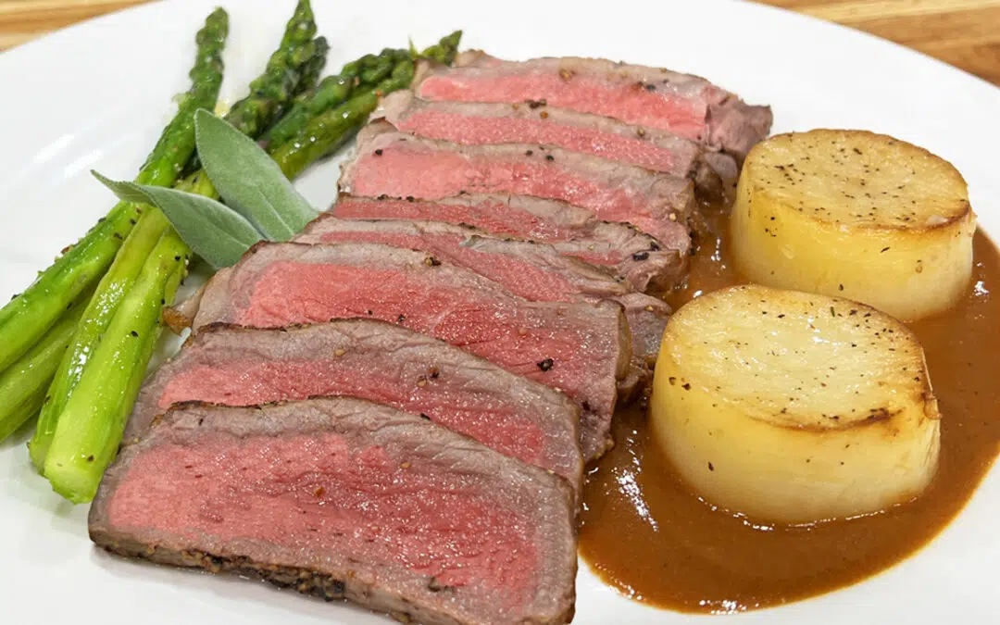

Home
Simple, Sizzling Steak Dinner

Odin's Review
Mortal chefs, hear my praise! I have savored a meal of celestial proportions:
a succulent steak, perfectly cooked and seasoned, accompanied by crisp
asparagus, golden potatoes, and a rich, velvety gravy. This feast was fit for
the halls of Valhalla, a culinary masterpiece that rivals the feasts of the
gods. The flavors were harmonious, each component complementing the other in
a symphony of taste. From the first bite to the last, it was an experience
that transcended mortal cuisine. I urge all who seek true culinary excellence
to partake in such a feast—a meal that would surely be welcomed even by the
gods themselves.
Ingredients
- 2 New York Strip Steaks about 1 pound each
- Salt and Black Pepper, to taste
- 2 tablespoons clarified Butter or Cooking Oil
- 2 tablespoons Butter and 2 more tablespoons to add at the end
- 1 large Shallot, finely chopped
- 1 tablespoon Garlic, minced
- Fresh Sage a few leaves (or substitute with thyme or rosemary)
- 1/4 cup 60ml Marsala or any fortified wine
- 2 tablespoons Balsamic Vinegar (18 years old, if available)
- 1 ½ cup Beef Stock
- 1 tablespoon of Cornstarch mixed with 1 tablespoon water, if needed
- 1/4 cup Blue Cheese (or Brie, with rind removed)
For the Potatoes:
- 3 large Baking Potatoes
- Salt and Pepper, to taste
- 2 tablespoons Garlic Olive Oil
- 2 cloves Garlic, thinly sliced
- Fresh Thyme, a few sprigs
- 1/2 cup Chicken Stock
For the Asparagus:
- 1 bunch Asparagus, peeled and ends trimmed
- Salt to taste
- 2 tablespoons Butter
Instructions
Pro-Tip: It’s All About The Seasoning
When it comes to cooking the perfect steak, it’s all about preparation and patience. Season your
steaks with salt on both sides, along with fresh ground pepper, and let them rest in the
refrigerator for 24 to 48 hours if possible.
This little trick allows the salt to tenderize the meat, leading to a more flavorful and tender
steak. If you’re short on time, even an hour’s worth of seasoning before cooking can make a
significant difference. Remember, a well-seasoned steak is the foundation of a great meal.
For the potatoes, don’t be afraid to get a little fancy without complicating things. A simple
cookie cutter can transform ordinary potatoes into elegant, circular masterpieces that are sure
to impress.
Keep them soaked in water until you’re ready to cook to prevent browning, and dry them
thoroughly for that perfect, crispy exterior. Remember, presentation matters just as much as taste
when it comes to serving up an unforgettable meal.
-
Preheat Oven to 450°F (232°C)
-
Season steaks with salt and (if you have the time) let them rest in the fridge
for 24 hours. Before cooking, season with black pepper.
-
In a fry pan, sear steaks on both sides until a crust forms. Finish cooking in
the Oven to desired temperature. Let rest 5 to 10 minutes before slicing.
-
Make the Sauce:
-
In the Reduction Pan, sauté shallots, garlic, and sage in butter.
-
Add Madeira, balsamic vinegar, and beef stock. Simmer until reduced slightly.
-
Add blue cheese, stirring until melted. Add the cornstarch IF NEEDED For a
smoother sauce, you can strain to remove solids.
-
Turn the heat off and add the remaining butter.
-
Preheat Oven to 250°F (120°C)
-
Make the Potatoes:
-
Peel and slice potatoes into 1-inch thick rounds. Use a cookie cutter for
uniform shapes. Keep them in water to prevent browning.
-
When ready to cook them, dry them thoroughly. Sear in a hot pan with olive oil
until golden brown on both sides.
-
Add garlic, thyme, and chicken stock. Cover and cook in the Oven until tender.
-
Make the Asparagus:
-
Boil asparagus in salted water until tender to your liking. Immediately transfer
to ice water to stop cooking. Before serving, reheat asparagus in a pan with
butter.
-
Arrange the sliced steak on plates, accompanied by the fondant potatoes and
asparagus. Drizzle the blue cheese sauce over the steak or on the side.
-
This recipe combines straightforward cooking techniques with high-quality
ingredients to create a meal that's both accessible and impressive.
-
Enjoy a beautifully plated and delicious Steak Dinner.